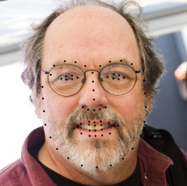
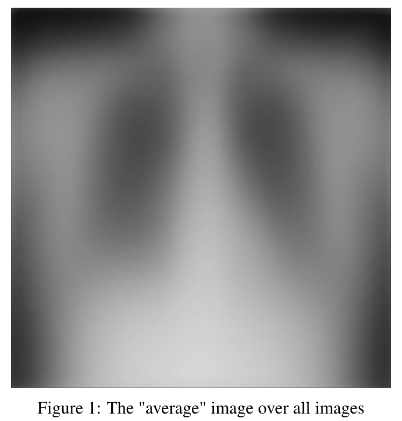
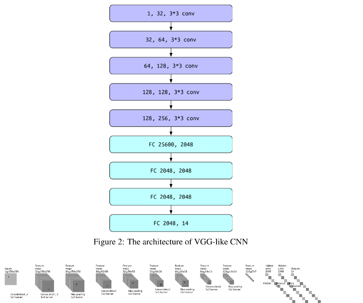
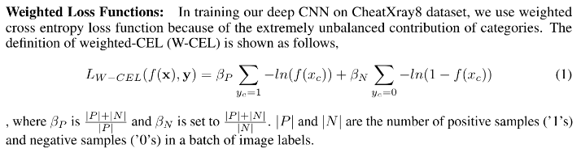
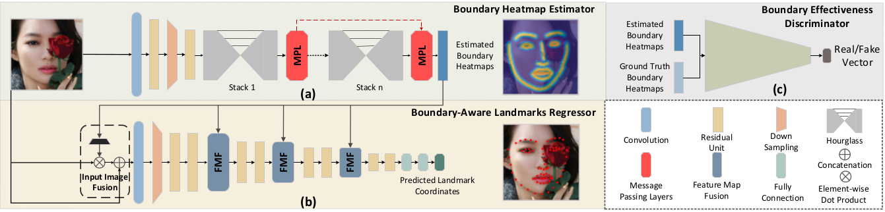

Shengju Qian (钱湦钜)B.E. Student
College of Software Engineering,
|
|

About Me Blog
Hi there. This is Shengju Qian.I am a junior student majoring in software engineering at University of Electronic Science and Technology of China, supervised by Fumin Shen .And I am also a research intern at sensetime group limited, Beijing. I am currently working for Key Point Detection Group supervised by Chen Qian and Wenyan Wu.
In 2017 Fall, I was an exchange student at University of California, San Diego. Luckily being supervised by Zhuowen Tu during my time in UCSD, I had a growth in both academic and field of vision.
My research interests is to develop robust and intelligent algorithms related to computer vision, deep learning, espacially in generative models and face alignment.
Education Background
(09. 2017 - 01. 2018)
Exchange Student Major GPA: 3.90/4.0
Core Course(Upper-Level): Recommender System(CSE 158), Deep Learning(COGS 181), Neural Networks(CSE 190)
(09. 2015 - Present)
Bachlor of Software Engineering. Cumulative GPA: 3.89/4.0, Major GPA: 3.92/4.0
Research Experience
03. 2018 - Present
Supervised by Chen Qian and Wenyan Wu
- Developing robust algorithm for key point detection in real life, espacially face alignment models, aimed at both improving the accuracy and reduction in costs.
- Currently trying to apply some novel generative models to generation of un-seen faces, which is a quite interesting!

03. 2017 - Present
Supervised by Fumin Shen
- Focuses on computer vision and machine learning, especially learning based hashing algorithms and their applications in visual retrieval and recognition problems
- Also developing robust algorithm for Recommender system, leveraging deep learning model for improving the performance of Recommender system, both in feature selection and matrix factorization.
Selected Projects
03. 2018 - Present
Sensetime Group Limted. Supervised, working together with Chen Qian and Wenyan Wu
- Constructing a robust face alignment algorithm with the help of boundary information generated by stacked hourglasses net.
- Leveraging the power of generative model for face synthesis, thus boosting the training procedure (in progress)
-
Diagnosis disease for Chest X-ray images 10. 2017 - 11. 2017
University of California, San Diego, Code, Report
- Developeing a VGG-like Convolution neural network for disease detection and localization.
- Adopting a novel weighted loss to tackle the problem of extreme-unbalanced samples per category.
- Programming Languages: Python, C/C++,
- Tools: Pytorch, Tensorflow, Latex, Git
- Language: Mandarin (native) English
  Skills
